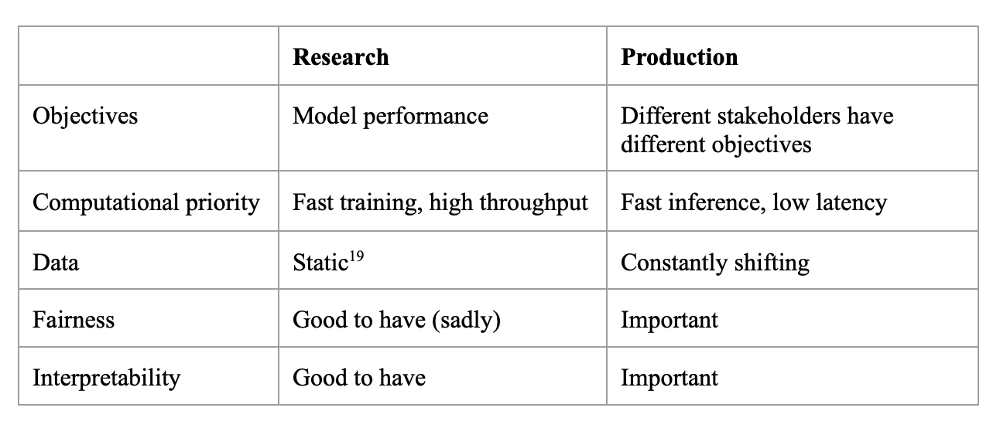
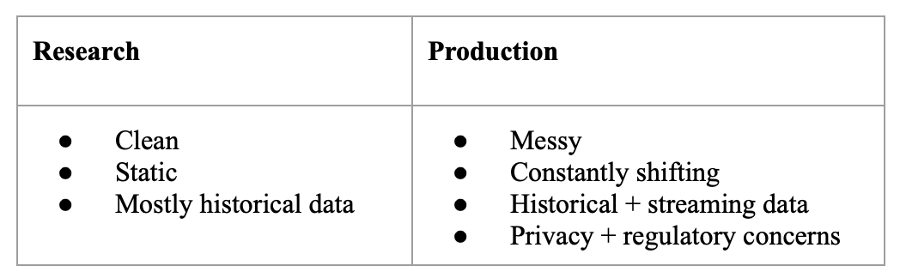

When to use ML?
- The system has the capacity to learn,
- Complex: the patterns are complex,
- Patterns: there are patterns to learn,
- Existing data: data is available, or it’s possible to collect data,
- Predictions: it’s a predictive problem,
- Unseen data: Unseen data shares patterns with the training data,
- It’s repetitive,
- The cost of wrong predictions is cheap,
- It’s at scale,
- The patterns are constantly changing
ML System needs
Machine learning in research vs. in production

About inference latency:
- 100ms delay can hurt conversion rates by 7% (Akamai study ‘17),
- 30% increase in latency costs 0.5% conversion rate (Booking.com ‘19),
- 53% phone users will leave a page that takes >3s to load (Google ‘16).
Data: difference in research and production

Requirements for ML Systems
- Reliability: the system should continue to perform the correct function at the desired level of performance even in the face of adversity (hardware or software faults, and even human error),
- Scalability: as the system grows (in data volume, traffic volume, or complexity), there should be reasonable ways of dealing with that growth,
- Maintainability: it’s important to structure your project and set up your infrastructure in a way such that different contributors can work using tools that they are comfortable with, instead of one group of contributors forcing their tools onto other groups,
- Adaptability: To adapt to changing data distributions and business requirements, the system should have some capacity for both discovering aspects for performance improvement and allowing updates without service interruption.
- Iterative Process: the process looks like a cycle with a lot of back and forth between different steps.
Iterative Process
- Project scoping
- Data engineering
- ML model development
- Deployment
- Monitoring and continual learning
- Business analysis
Steps
- Understand / Clarify requirements,
- Design Architecture,
- Defined needed data,
- Design the model (and a baseline) as well as the metric,
- Design the interface
Resources
See: